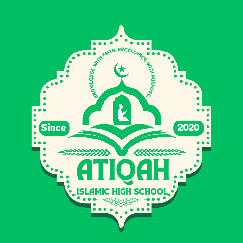

Student Life
Student Life
Students enjoy a nurturing environment that combines Islamic teachings with academic excellence.

Clubs & Student OrganizationsVarious clubs help students develop leadership and talents, such as debate, sports, and environmental clubs.
 Academic Support
Academic Support
Evening revisions, remedial classes, and study groups ensure academic excellence.
 Islamic Growth & Spiritual Development
Islamic Growth & Spiritual Development
Daily Qur'an recitation, Hadith lessons, Halaqah groups, and weekly Tafsir classes nurture faith and morals.
Important School Rules
Students must maintain discipline, respect, cleanliness, punctuality, and proper uniform at all times.
School Facilities
Classrooms, labs, mosque, playground, library, and reading spaces support student development.
Student Handbook
You can download the full student handbook containing rules, guidelines, and school expectations.
Download Handbook Islamic Values & Guidance
Islamic Values & Guidance
“Seek knowledge from the cradle to the grave” — Prophet Muhammad (SAW)
- Morning Qur'an recitation
- Daily Hadith reminders
- Weekly Tafsir sessions
- Islamic morals and manners training
- Student-led Halaqah groups